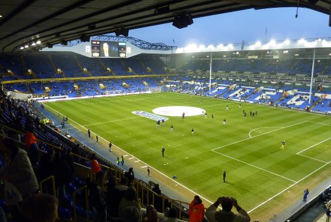
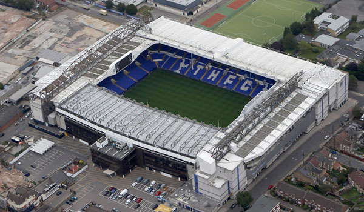

TOTTENHAM

Nombre completo: Tottenham Hotspur Football Club
Apodo: Spurs
Fundacion: 1882
Ciudad: Londres, Londres
Estadio: Estadio White Hart Lane
TITULOS

Premier League
2
1950/51 - 1960/61

Fa Cup
8
1900/01 - 1920/21 - 1960/61 - 1961/62 - 1966/67 - 1980/81 - 1981/82 - 1990/91

Community Shield
7
1921 - 1951 - 1961 - 1962 - 1967 - 1981 - 1991

Carabao Cup
4
1970/71 - 1972/73 - 1998/99 - 2007/08

UEFA Europa League
2
1971/72 - 1983/84

Recopa de Europa
1
1962/63
ESTADIO
Nombre: Estadio White Hart Lane
Fundacion: 1899
Ciudad: Londres
Capacidad: 36.243 espectadores

